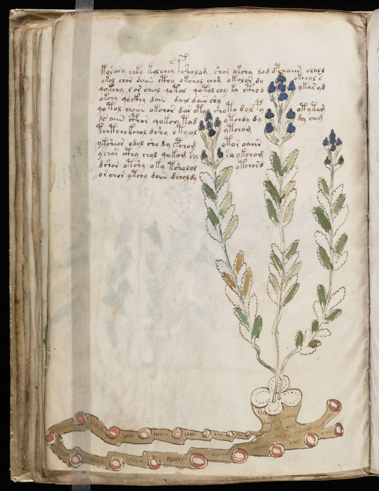

f45v
1korary chko kol chey fsholom shor ykchy dod opchaiin olald2okol chor daiin cthy okchol chom okolor dyokchol s3qokchy l or cheol qotol qotol chy ky ctho dykar yd4okchy qockhy dain dail dair shy5qotol choiin okchar dar otyshoto dol pyotytam6ss aiin cphor qokey todytchdy dydy cheg7tchtcho kchol dshy oty olytchom8ykcheor odal sho dy pchomotor oaiir9ychor cthy chol qokom sysa ykchom10dshor otshy oky tshololytchor d11or chor ytchy doiin dcholdy
